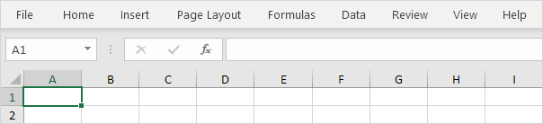

Ribbon
Tab | Grup | Gunakan Ribbon | Tutup Ribbon
Excel memilih Beranda Tab Ribbon saat Anda membukanya. Pelajari cara menggunakan Ribbon.
Tab
Tab pada Ribbon adalah: File, Beranda, Sisipkan, Tata letak halaman, Rumus, Data, Tinjauan, Tampilan, dan Bantuan. Tab Beranda berisi perintah yang paling sering digunakan di Excel.
Grup
Setiap tab berisi grup perintah terkait. Misalnya, tab Tata Letak Halaman berisi grup Tema, grup Penyetelan Halaman, dll.

Gunakan Ribbon
Mari kita gunakan Ribbon untuk menyisipkan tabel. Tabel memungkinkan Anda menganalisis data di Excel dengan cepat dan mudah.
Pada tab Sisipkan, dalam grup Tabel, klik Tabel.

Excel secara otomatis memilih data untuk Anda. Centang 'Tabel saya memiliki header' dan klik OK.

Hasil. Excel membuat tabel yang diformat dengan baik untuk Anda.

Catatan: gunakan panah tarik-turun untuk mengurutkan dan memfilter dengan cepat. Kunjungi bab kami tentang tabel untuk mempelajari lebih lanjut tentang topik ini.
Tutup Ribbon
Anda dapat menciutkan Ribbon untuk mendapatkan ruang ekstra di layar. Klik kanan di mana saja pada Ribbon, lalu klik Tutup Ribbon (atau tekan Ctrl+F1).

Hasil.
